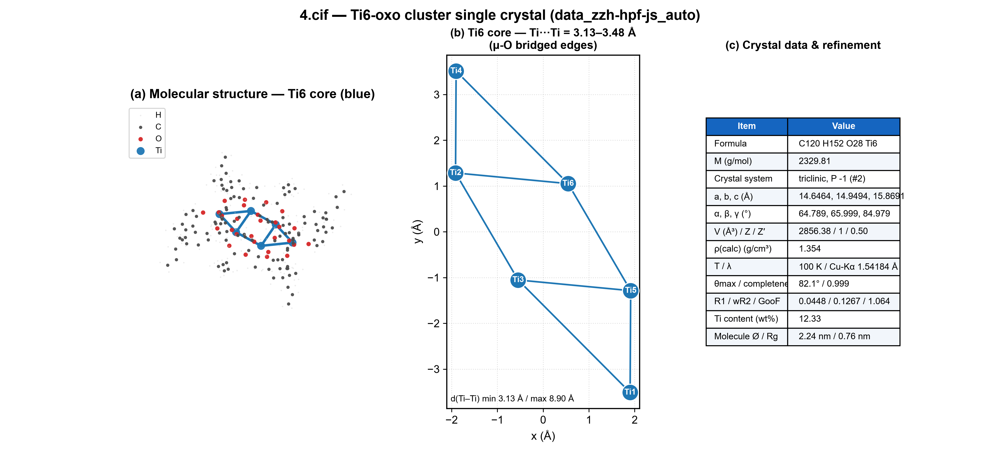
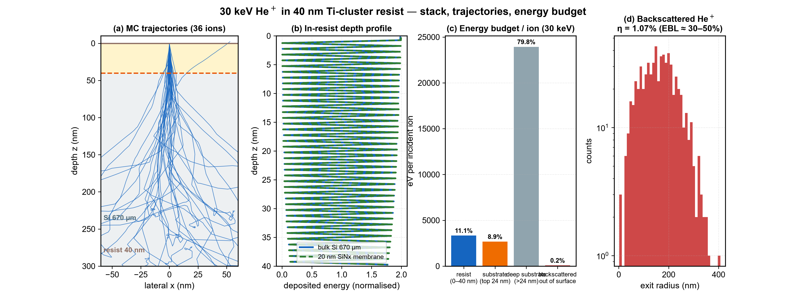
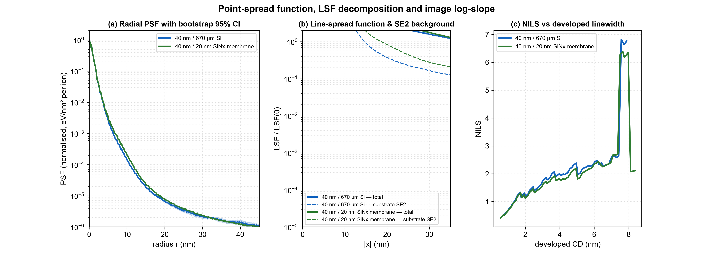
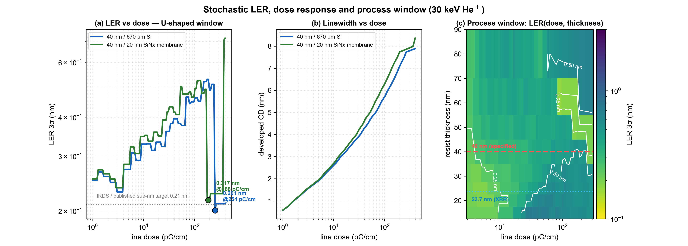

工况：光刻胶 40 nm（Ti₆-氧簇光刻胶，组成取自 data/4.cif，密度取自 XRR 实测）
/ 衬底 Si(001) 670 µm / 入射 He⁺ 30 keV |
生成时间 2026-09-09 22:43:20
文件 data/4.cif 是 Olex2 1.3 + SHELXL-2018/3 精修输出的单晶 CIF（data_
zzh-hpf-js_auto），Rigaku Synergy Custom（HyPix 探测器）在 100 K
用 Cu Kα 收集到 θmax = 82.1°（分辨率 0.79 Å），
完整度 0.999，R1 = 0.0448，数据质量很好，结构可信。
| 项目 | 值 | 项目 | 值 |
|---|---|---|---|
| 分子式 | C120 H152 O28 Ti6 | M | 2329.81 g/mol |
| 晶系 / 空间群 | triclinic, P -1 (#2) | Z / Z′ | 1 / 0.50（分子居于反演中心） |
| 晶胞 | a = 14.6464, b = 14.9494, c = 15.8691 Å; α = 64.789, β = 65.999, γ = 84.979° V = 2856.38 ų | ||
| 计算密度 ρxtal | 1.354 g/cm³ | Ti 质量分数 | 12.33 wt% |
| R1 / wR2 / GooF | 0.0448 / 0.1267 / 1.064 | 分子尺寸 | 直径 2.24 nm，回转半径 0.76 nm |
去掉金属后对键图做连通分量分割，得到 O4Ti6 无机核 + 有机配体：
| 组分 | 数目 | 配位方式 | 化学判据 |
|---|---|---|---|
| C18H16O2 | 2 | k:1Ti x2 → Ti1,Ti2 | phenolate/alkoxide-type (C-O ~1.35 A); 2 aromatic ring(s); 2 C=C (allyl/vinyl) |
| C18H16O2 | 2 | k:1Ti x1,2Ti x1 → Ti1,Ti3 | phenolate/alkoxide-type (C-O ~1.35 A); 2 aromatic ring(s); 2 C=C (allyl/vinyl) |
| C6H11O2 | 2 | k:1Ti x2 → Ti1,Ti2 | carboxylate-type (C-O ~1.26 A) |
| C6H11O2 | 2 | k:1Ti x2 → Ti1,Ti3 | carboxylate-type (C-O ~1.26 A) |
| C6H11O2 | 4 | k:1Ti x2 → Ti2,Ti3 | carboxylate-type (C-O ~1.26 A) |
| O | 2 | k:3Ti x1 → Ti1,Ti2,Ti3 | oxo |
| O | 2 | k:2Ti x1 → Ti2,Ti3 | oxo |
| 单晶 (100 K) 密度 | 1.354 g/cm³ |
|---|---|
| XRR 实测胶膜密度 (Leptos, sample 4) | 0.7708 g/cm³ |
| 致密化比例 ρ_film / ρ_xtal | 56.9% → 旋涂膜约 43% 自由体积（残余溶剂/疏松堆积） |
| XRR 膜厚 / 粗糙度 | 23.74 nm / 0.73 nm |
| 电子密度 (胶膜) | 0.2447 e⁻/ų → 2θ_c = 0.262° (Cu Kα) |
| 每克电子数 Z/A | 0.5271 mol e⁻/g（Si 为 0.4985，故低能段质量阻止本领更高） |
| 电子阻止本领 | Lindhard–Scharff（S_e ∝ v ∝ √E），Bragg 加和；整体乘标定因子 |
|---|---|
| 核阻止本领 | ZBL 通用 s_n(ε)，Bragg 加和 |
| 角散射 | 屏蔽卢瑟福（θ<5° 多重散射 + 离散大角碰撞），屏蔽参数 α(E) 由匹配 ZBL 核阻止反解 |
| 标定 1（射程） | e_scale = 1.40 → 30 keV He⁺ 在 Si 中的投影射程 = 282 nm（SRIM 282.2 nm，误差 <1%） |
| 标定 2（随机项） | a_eff = 9.17 nm²，使悬空膜基准的最小 LER(3σ) = 0.21 nm（Zhuang et al. 2024 实测值） |
| 曝光事件能量 w_SE | 20 eV/事件（二次电子产生能） |
| 凝胶阈值 ρ_gel | 15 eV/nm³（负性胶交联阈值，典型 10–30） |
随机 LER 采用 σ_LER = CD /(NILS·√(n_A·a_eff))，其中 n_A = 边缘处曝光事件面密度
= E_th / w_SE；该式在固定 CD 下退化为 Mack 标度律 σ ∝ 1/(NILS·√Dose)。
| 通道 | eV/离子 | 占比 | 含义 |
|---|---|---|---|
| 沉积在光刻胶内（0–40 nm） | 3331 | 11.1% | 真正用于曝光的能量 |
| 衬底近界面（0–24 nm，可回注） | （其中回注 143 eV） | — | SE2 邻近效应背景 |
| 背散射逸出表面 | — | η = 1.07% | EBL 为 30–50%，HIL 低 2 个数量级 |
| 指标 | 40 nm / 670 µm Si（本工况） | 40 nm / 20 nm SiNx 悬空膜（基准） |
|---|---|---|
| 能量包络 r50 / r90 / r99 | 0.62 / 1.62 / 3.9 nm | 0.62 / 1.62 / 4.4 nm |
| 衬底 SE2 回注能量 | 143 eV/离子 | 245 eV/离子 |
| 最佳线剂量 | 245 pC/cm | 175 pC/cm |
| 对应线宽 CD | 7.6 nm | 7.5 nm |
| NILS | 6.6 | 6.5 |
| LER 3σ（最佳） | 0.21 nm | 0.21 nm |
| 变体 | 最佳剂量 (pC/cm) | CD (nm) | NILS | LER 3σ (nm) |
|---|---|---|---|---|
| 40 nm / ρ=0.771（本工况） | 245 | 7.6 | 6.6 | 0.21 |
| 23.7 nm（XRR 实测）/ ρ=0.771 | 11 | 1.7 | 2.1 | 0.15 |
| 40 nm / ρ=1.354（单晶致密） | 96 | 7.5 | 5.8 | 0.23 |
胶厚扫描（15–80 nm）显示：最优 LER 在 20–60 nm 区间基本持平（~0.18–0.21 nm，弱 U 型、谷底约 50–60 nm）， 增至 80 nm 才回升到 ~0.27 nm；即本工况 40 nm 并非明显吃亏，减薄到 20–25 nm 仅带来 ≈0.01–0.02 nm 的边际收益。密度方向：40 nm 下 ρ 由 0.771 提到 1.354，最优 LER 反而由 0.21 升到 0.23 nm（更高密度使达到凝胶阈值所需剂量更低、 但 PSF 略宽、NILS 略降）；该对比受 a_eff 标定锚定（已对准低密度膜）影响，属模型内相对趋势， 不宜外推为“密度越高越好”。主要可控杠杆仍是剂量优化 + 对准无衬底回注的几何。




python run_case.py（依赖 numpy / scipy / matplotlib；
核心代码在 src/hil_mc/：cifio 解析 CIF，structure 做簇化学解析，
materials 计算阻止本领，mc 做输运，metrics 做 PSF/NILS/LER）。